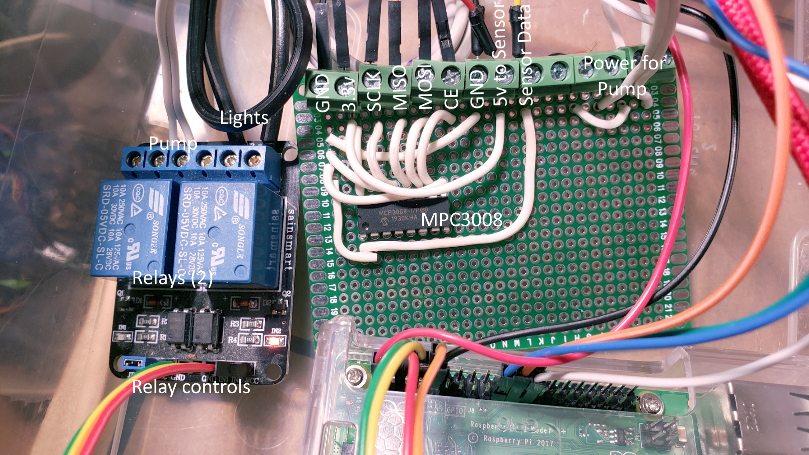

Autonomous Carolina Reaper growing system by Alex Elliott
This project started out as a way to explore socket programming concepts that I learned in a computer networking course. I wanted to be able to make a real world implementation of the course conecpts such as establishing a TCP connection, sending and processing HTTP requests, and setting up a client-server system. As a separate side project, I had been entertaining the idea of growing a pepper plant to satisfy my spice needs. I wanted to grow my own plant but did not want the additionally daily chores of turning on and off the lights at the correct time and remembering to water it (and when it was last watered). I figured that I would replace those efforts with something I'm far more interested in: Raspberry Pis and networking. This project is the result. Enjoy.
The growing light used in this setup is a modified desk lamp. A cut in the live wire of the power cord allows the live wire to be connected to the relay. The switch on the desklamp is kept in the ON position and the Raspberry Pi is able to turn the lamp on and off through the relay.
In most of the pictures, I have used an LED light bulb in the socket to provide clearer images. During regular use, I use a grow light bulb that emits a purple-toned light that aparently emits the wavelengths the plants crave.
Controlling the light is very easy; there are two modes: automatic and manual. Automatic mode turns the lamp on and off at user-determined times whereas manual mode allows the state of the lamp to be toggled using a button on the control page.
The system periodically monitors the moisture of the soil using a capacitive soil moisture sensor. These are better than resistive moisture sensors because they are not prone to corrosion and leaching harmful substances into the soil. This pariticular soil moisture sensor outputs an anolog signal. It is important to note that although Ardiunos have analog input pins, the Raspberry Pi does not. Because the Raspberry Pi is only able to read in digital inputs, we need to use a ADC (Analog to Digital Converter) to convert the soil moisture sensor's output into a signal the Pi can understand. I am using a MCP3008 10-bit ADC IC. There are two different modes to interface with this IC: Software SPI and Hardware SPI. I won't go into the differences, but I'm using Hardware SPI for this project. Fortunately enough, Adafruit has a free-to-use library to interpet the data from this particular ADC which I am using.
The MCP3008 outputs a 10-bit interpetation of the analog signal which means we will see values between 0 and 1023. Note however that when the sensor is just sitting out of the soil, the output is not exactly 0, and similarly it is not 1023 when sitting in a glass of water. Because of this, we need to calibrate the sensor. I accomplished this by filling two small cups with soil (one perfectly dry, and one completely saturated) and noted the measurements in each. For my particular sensor, my range was 349 to 733. In the code, I simply map this range to a 0 to 100 range.
The watering process simply involves turning on the pump for a user-determined portion of time. The pump being used is simply a generic 5v submersable pump that is being controlled by the Raspberry Pi through a relay to avoid pulling high current from the GPIO pins. Power is supplied to the pump from an old 5v usb wall adaptor and a usb charging cable with the 5v and ground leads connected to system. A gallon sized reservoir sits next to the plant with the pump sitting at the bottom. A quarter-inch clear plastic tube runs from the pump to the watering ring. The ring pictured below is simply a loop of eighth-inch clear plastic tube mated to a T connector that hooks up to the pump's tube. Small holes cut around this ring allow water to be evenly distributed across the surface of the soil.
Watering can be either automatic or manual. In automatic mode, the system will trigger the watering process when soil moisutre falls below the user-defined threshold. A checkbox on the settings form allows the user to set wether or not the system will automatically water if the lights are not currently powered. The idea behind this was to have an option to not have the plant water itself in the middle of the night which could potentially wake the user if the system is in a bedroom. In manual mode, the plant is watered by pressing the button on the control page.
All aspects of this system are controlled by the control page. Connecting to this page is accomplished through any webbrowser by simply typing the IP address of the Raspberry Pi followed by a colon and the port number. If server is running on 10.0.0.3 for example and port 11000, type 10.0.0.3:11000 into any browser to connect. Typing this in causes the browser to send a GET request to the server which returns the html containing the control page.
"Your plant thirsts, quench him" allows the user to manually trigger the pump to water the plant (regardless of the watering mode selected). Similarly, the toggle grow lights function works independly of the lighting mode selected.
Whether it be for spotting trends and fluctuations in soil moisture over time or just genuine love of graphs, the system allows the user to generate a line graph of soil saturation levels over time. Every 15 minutes, the program takes a soil moisture reading and adds it to data.csv. In addition, pressing the "Refresh" button takes a reading and appends it to the file. Upon user request, the program uses the Python MatPlotLib library to generate a .svg file of the graph which is then sent to the browser to be displayed.
Additionally, the user has the option to choose the range of dates they want to see visualized: past 48hrs, past week, past month, and all. This makes it much easier to visualize specifically the regions of interest.
These functions can be accessed by appending "/graphs" to the URL of the control page. (Similarly, the raw .csv data can be accessed by appending "/logs")